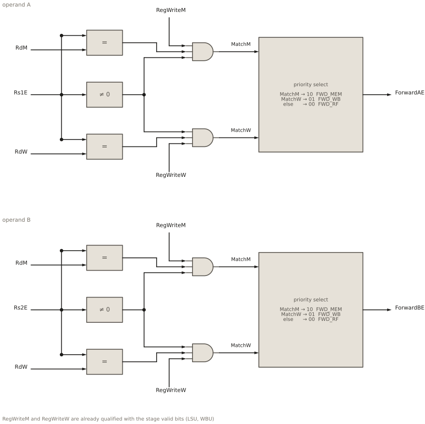
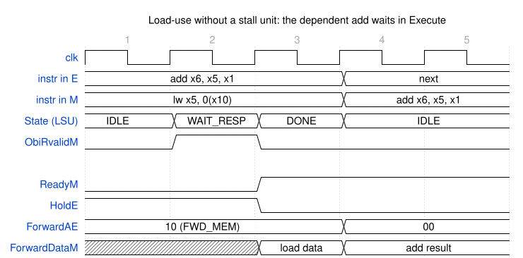
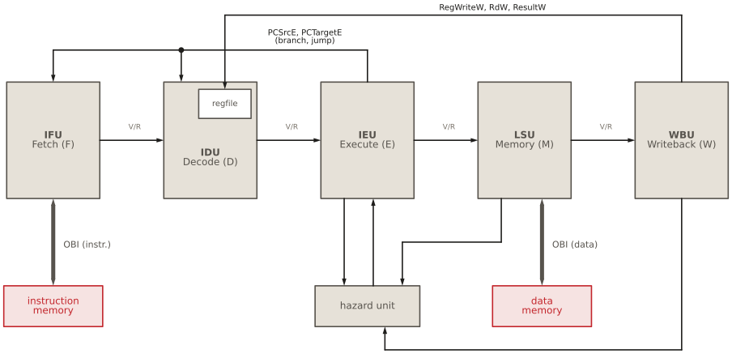

13 Pipeline hazards and the HIPV core
Pipeline hazards and the HIPV core
13.1 Goal for this week
- Know the three kinds of pipeline hazards: structural, data and control
- Understand how HIPV resolves each of them, and which part of the core does it
- Read the hazard unit: the forwarding conditions and their priority
- Put the five stages together: the top-level module
hipv_coreand its interface
13.2 Introduction
At the algorithmic level, RV32I is a loop that finishes one instruction before it starts the next (see the pipeline chapter). The pipeline breaks that promise on purpose: it keeps up to five instructions in flight, each in a different stage. That is where its speed comes from, but it means that an instruction can start before the ones in front of it have finished.
A hazard is a situation in which this overlap would produce a different result than the sequential algorithm. Hazards come in three kinds:
- A structural hazard: two instructions need the same piece of hardware in the same cycle.
- A data hazard: an instruction needs a value that an earlier instruction has computed, but not yet written to the register file.
- A control hazard: the pipeline must fetch the next instruction before it knows which instruction that is, because a branch in front of it is not resolved yet.
Every pipelined processor has to deal with all three. In the chapters on the individual stages we met the pieces of HIPV that do this one at a time: the forwarding multiplexers in Execute, the write-first register file in Decode, the flush in Fetch and Decode, and the elastic handshake that connects them all. This chapter puts these pieces together, adds the last missing block, the hazard unit, and then assembles the whole core.
13.3 Structural hazards
A structural hazard arises when the hardware cannot serve all the instructions that need it in the same cycle. The classic example is a single memory port: in a cycle in which the Memory stage loads data, Fetch cannot fetch an instruction, and one of them must wait.
HIPV avoids structural hazards by construction, by giving every stage the resources it needs:
- Two memory ports. Fetch has its own OBI port for instructions, and the Memory stage its own for data. Both can work in the same cycle.
- Enough register file ports. Decode reads two registers through two read ports, while Writeback writes a third through a separate write port.
- Separate arithmetic. Execute computes branch targets with a dedicated adder (
targetadd) and evaluates branch conditions with its own comparator (branchcmp), so the ALU is never needed twice.
Even if two stages did compete, the elastic handshake would turn the conflict into a stall rather than an error: the stage that has to wait simply holds ready or valid low. The SoC relies on exactly this when both ports of the core reach the same slave through the interconnect, which then grants one of them and makes the other wait, as we will see later in the course.
13.4 Data hazards
A data hazard arises when an instruction reads a register that an earlier instruction has not written yet:
add x5, x1, x2 # producer: writes x5
sub x6, x5, x3 # consumer: reads x5 one instruction latersub reads x5 from the register file in Decode. At that moment add is one stage ahead, in Execute, where its result is just being computed. The register file receives that result only when add reaches Writeback, three cycles later. Without help, sub would compute with the old value of x5. This kind of dependency is called read after write (RAW): the consumer reads a register after the producer writes it, in program order, but the pipeline would do the read first.
RISC-V has two other kinds of dependency, write after read and write after write, but HIPV cannot suffer from them: all instructions read their registers in the same stage (Decode) and write them in the same stage (Writeback), always in program order.
13.4.1 The distance decides the remedy
How a RAW hazard is resolved depends on the distance between the producer and the consumer, counted in instructions. When the consumer is in Execute and needs its operands, the producer is as many stages further down the pipeline:
add x5, x1, x2 # producer
sub x6, x5, x3 # distance 1: forward from M
or x7, x5, x4 # distance 2: forward from W
and x8, x5, x9 # distance 3: write-first register file
xor x9, x5, x1 # distance 4: plain register read| Distance | Producer is in | Remedy | Where |
|---|---|---|---|
| 1 | the Memory stage | forward its result, ForwardDataM |
forwarding multiplexers in Execute |
| 2 | Writeback | forward its result, ResultW |
forwarding multiplexers in Execute |
| 3 | Writeback, while the consumer is in Decode | write-first bypass | register file in Decode |
| ≥ 4 | already retired | none: the register file holds the value | — |
The two forwarding cases need the hazard unit, which decides when a forwarded value replaces the register operand. The third case is handled inside the register file, by the write-first read ports described in the IDU chapter: when the consumer reads in Decode in the same cycle in which the producer writes in Writeback, the register file returns the value being written.
13.4.2 The hazard unit

RdM and RdW, qualified with RegWrite and rs ≠ x0, and a priority select chooses the Memory stage over Writeback over the register file.
The hazard unit is a small, purely combinational block (Figure 13.1). It compares the source registers of the instruction in Execute with the destination registers of the instructions in the Memory stage and in Writeback, and drives the selects of the forwarding multiplexers:
module hazard (input logic [4:0] Rs1E, Rs2E,
input logic [4:0] RdM, RdW,
input logic RegWriteM, RegWriteW,
output logic [1:0] ForwardAE, ForwardBE);
import hipv_pkg::*;
always_comb
if (RegWriteM & (Rs1E == RdM) & (Rs1E != 5'b0)) ForwardAE = FWD_MEM;
else if (RegWriteW & (Rs1E == RdW) & (Rs1E != 5'b0)) ForwardAE = FWD_WB;
else ForwardAE = FWD_RF;
always_comb
if (RegWriteM & (Rs2E == RdM) & (Rs2E != 5'b0)) ForwardBE = FWD_MEM;
else if (RegWriteW & (Rs2E == RdW) & (Rs2E != 5'b0)) ForwardBE = FWD_WB;
else ForwardBE = FWD_RF;
endmoduleThe two blocks are identical, one for each operand. The values FWD_MEM, FWD_WB and FWD_RF come from hipv_pkg, and they are the selects of fwdamux and fwdbmux in the IEU.
13.4.3 The forwarding conditions
A value is forwarded from a stage when three conditions hold together:
| Term | Question | Why it is needed |
|---|---|---|
Rs1E == RdM |
Does the instruction in that stage write my source register? | Only then does it hold a newer value of my operand. |
RegWriteM |
Does that instruction write a register at all? | Stores and branches have bits in their rd field too, but they never write rd. Without this check, the immediate bits of a store could trigger a bogus forward. |
Rs1E != 0 |
Is my source register something other than x0? |
x0 is always zero. addi x0, x1, 5 has RegWrite = 1, but its write is discarded, and forwarding its result would give a non-zero x0. |
RegWriteM and RegWriteW are already qualified with the valid bits of their stages, by the LSU and the WBU. A bubble therefore never matches, even though its pipeline registers still contain the fields of an older instruction.
Priority. If both the Memory stage and Writeback write the register, the Memory stage wins:
add x5, x1, x2 # in W: older value of x5
sub x5, x5, x3 # in M: newer value of x5
and x6, x5, x4 # in E: must use the value from subIn program order, the instruction in the Memory stage is the younger of the two, so it holds the most recent value of x5. Checking it first, in the if, gives it priority.
13.4.4 Loads: no stall unit needed

add. While the load waits for memory, ReadyM is 0 and the add waits in Execute, with ForwardAE already pointing to the Memory stage. When the load data arrives (cycle 3), ForwardDataM carries it, and the add leaves Execute with the correct operand.
One data hazard cannot be solved by forwarding in a classic five-stage pipeline:
lw x5, 0(x10)
add x6, x5, x1 # needs x5 right awayWhen the add is in Execute, the load is in the Memory stage, and its data arrives from memory only at the end of that stage, too late for the add. Classic designs therefore add a load-use stall: the hazard unit detects this pattern and freezes Fetch and Decode for one cycle.
HIPV needs no such logic, because the elastic handshake already does it (Figure 13.2). A load holds the Memory stage until its transaction is complete (ReadyM = 0), and while it does, the add simply waits in Execute. The hazard unit already selects FWD_MEM for it, and the LSU makes sure that ForwardDataM is the loaded data, not the address. In the cycle in which the data is there, ReadyM rises, and the add leaves Execute with the correct operand. Before that, the forwarded value is garbage, but it is never used, because the add cannot leave. The refresh loop (HoldE) in the IEU keeps the operand register up to date while the instruction waits, so that no forwarded value is lost if the producer retires in the meantime (see the IEU chapter).
The same mechanism also covers stores and slow memories: whatever the Memory stage is doing, Execute waits for it, and forwarding delivers the right value once it can leave. This is why the hazard unit of HIPV has no stall outputs at all.
13.5 Control hazards
A control hazard arises because Fetch must choose the next instruction every cycle, but whether a branch is taken, and where it goes, is known only when the branch reaches Execute. By then, the stages behind it, Fetch and Decode, already hold the instructions that follow it in memory.
HIPV handles this in the simplest way: it always continues fetching sequentially, as if every branch were not taken, and repairs the damage when the guess was wrong. When Execute resolves a taken branch or a jump, it raises PCSrcE for one cycle, and two things happen at once:
- Fetch loads its PC with
PCTargetEand starts fetching from there. An instruction it already holds is dropped, and a fetch that is still on its way from memory is discarded on arrival, using the discard flag (see the IFU chapter). - Decode drops its instruction by gating
ValidDwith~PCSrcE, and its valid bit is cleared at the same edge (see the IDU chapter).
This is a flush: the wrong-path instructions become bubbles. Execute and the later stages are not touched. The instructions there are older than the branch, and the branch itself continues to the Memory stage and retires normally.
Two details make the flush safe in the elastic pipeline. PCSrcE is qualified with the valid bit of Execute, so a bubble never redirects, and gated with ReadyM, so the redirect fires only in the cycle in which the branch actually leaves Execute. While the branch waits, for example behind a load whose data it compares, its operands may not be final yet, and a redirect issued from them could not be taken back.
The cost of a taken branch is the work thrown away in Fetch and Decode, plus the time to fetch the target. Better processors reduce it with branch prediction, guessing the outcome in Fetch already. HIPV does not predict, which keeps it simple, and leaves an obvious direction for improvement.
13.6 Summary of hazards
| Hazard | Remedy | Where |
|---|---|---|
| structural | separate memory ports, register file ports and adders | across the core |
| RAW at distance 1 or 2 | forwarding | hazard unit and forwarding multiplexers (IEU) |
| RAW at distance 3 | write-first read ports | register file (IDU) |
| load-use, slow memory | stall by back-pressure | handshake: ReadyM |
| producer retires while the consumer waits | operand refresh | HoldE loop (IEU) |
| taken branch or jump | flush of Fetch and Decode | PCSrcE: IFU, IDU |
What stands out is how little dedicated hazard logic HIPV needs. The hazard unit has no stall outputs, and there is no separate flush controller. The valid/ready handshake carries most of the work: a stage that cannot proceed holds ready low, a stage with nothing to offer holds valid low, and a flush is just a valid bit turned off.
13.7 The HIPV core

We now have all the parts, and the top level of the CPU, hipv_core.sv, puts them together (Figure 13.3). It contains no logic of its own. It is purely structural: six instances, the five stages and the hazard unit, and the wires that connect them. Every one of those connections is a signal we have already met from one side or the other in the stage chapters.
13.7.1 Interface of the CPU
Seen from the outside, the whole CPU has a remarkably small interface: a clock, a reset, and two OBI master ports.
module hipv_core (input logic clk, reset,
// OBI instruction port
output logic ObiIReq,
input logic ObiIGnt,
output logic [31:0] ObiIAddr,
input logic ObiIRvalid,
input logic [31:0] ObiIRdata,
// OBI data port
output logic ObiDReq,
input logic ObiDGnt,
output logic [31:0] ObiDAddr,
output logic ObiDWe,
output logic [3:0] ObiDBe,
output logic [31:0] ObiDWdata,
input logic ObiDRvalid,
input logic [31:0] ObiDRdata);| Group | Signals | Connected to |
|---|---|---|
| Clock and reset | clk, reset (synchronous, active high) |
every stage |
| Instruction port (read only) | ObiIReq, ObiIGnt, ObiIAddr, ObiIRvalid, ObiIRdata |
the IFU (Obi…F) |
| Data port (read and write) | ObiDReq, ObiDGnt, ObiDAddr, ObiDWe, ObiDBe, ObiDWdata, ObiDRvalid, ObiDRdata |
the LSU (Obi…M) |
The instruction port is the read-only subset of OBI, the data port the full set with the write signals. The names change at the boundary: inside, the ports carry the stage suffix (ObiReqF, ObiReqM); outside, they are named after their role (ObiIReq for instructions, ObiDReq for data), which is what the memory system on the other side cares about.
Everything a program does reaches the outside world through these two ports. There are no interrupt inputs and no debug port yet. After reset, the core starts fetching at address 0x00000000, the reset value of the PC register in the IFU.
13.7.2 Inside the top level
The body of hipv_core has two parts. First, the internal wires, declared in groups, one group per boundary between two stages:
// F <-> D
logic ValidF, ReadyD;
logic [31:0] InstrF, PCF, PCPlus4F;
// D <-> E
logic ValidD, ReadyE;
logic [31:0] RD1D, RD2D, ImmExtD, PCD, PCPlus4D;
...
// E <-> M
logic ValidE, ReadyM;
logic [31:0] ALUResultE, WriteDataE, PCPlus4E;
...
// redirect
logic PCSrcE;
logic [31:0] PCTargetE;
// M <-> W
logic ValidM, ReadyW;
logic [31:0] ALUResultM, ReadDataM, PCPlus4M, ForwardDataM;
...
// forwarding
logic [1:0] ForwardAE, ForwardBE;Then the six instances, connected by name. Because every signal carries the suffix of the stage that produces it, the connections are easy to check: an output of the IEU always ends in E, and it appears as an input of the LSU or as feedback to an earlier stage. Two instances show the pattern:
// Execute
ieu ieu(.clk(clk), .reset(reset),
.ValidD(ValidD), .ReadyE(ReadyE),
.RD1D(RD1D), .RD2D(RD2D), .ImmExtD(ImmExtD), .PCD(PCD), .PCPlus4D(PCPlus4D),
.Rs1D(Rs1D), .Rs2D(Rs2D), .RdD(RdD), .Funct3D(Funct3D),
.RegWriteD(RegWriteD), .MemWriteD(MemWriteD), .BranchD(BranchD),
.JumpD(JumpD), .JalrD(JalrD), .ResultSrcD(ResultSrcD),
.ALUSrcAD(ALUSrcAD), .ALUSrcBD(ALUSrcBD), .ALUControlD(ALUControlD),
.ForwardAE(ForwardAE), .ForwardBE(ForwardBE),
.ForwardDataM(ForwardDataM), .ResultW(ResultW),
.PCSrcE(PCSrcE), .PCTargetE(PCTargetE),
.ValidE(ValidE), .ReadyM(ReadyM),
.ALUResultE(ALUResultE), .WriteDataE(WriteDataE), .PCPlus4E(PCPlus4E),
.RdE(RdE), .Rs1E(Rs1E), .Rs2E(Rs2E), .Funct3E(Funct3E),
.RegWriteE(RegWriteE), .MemWriteE(MemWriteE), .ResultSrcE(ResultSrcE));
// Hazard unit (forwarding)
hazard hz(.Rs1E(Rs1E), .Rs2E(Rs2E), .RdM(RdM), .RdW(RdW),
.RegWriteM(RegWriteM), .RegWriteW(RegWriteW),
.ForwardAE(ForwardAE), .ForwardBE(ForwardBE));The IEU is the busiest instance, because Execute is where the pipeline’s feedback paths meet: the forwarded values come in from the Memory stage and Writeback, the forwarding selects come from the hazard unit, and the redirect goes out to Fetch and Decode. Three kinds of connections appear in the whole module:
- Forward connections, from each stage to the next: the handshake pair and the payload. They are the pipeline itself.
- Backward connections:
readyagainst the flow in every handshake; the redirectPCSrcE/PCTargetEfrom Execute to Fetch and Decode; the write portRegWriteW/RdW/ResultWfrom Writeback to the register file in Decode; and the forwarded valuesForwardDataMandResultWinto Execute. - The hazard unit, which listens to the register numbers of three stages and talks only to Execute.
One output of the WBU, ValidW, is connected to nothing. It marks the cycle in which an instruction retires, which is useful in waveforms, and it is the natural hook for an instruction trace port in the future.
13.7.3 How fast is it?
HIPV was designed to be correct and readable first. It is not fast. With ideal memories, the IFU fetches at most one instruction every three cycles, because it waits for each fetch to finish before it starts the next. Loads and stores add the latency of the data memory in the Memory stage, and a taken branch throws away the work in Fetch and Decode. The rest of the pipeline could handle one instruction per cycle, but it is starved by Fetch.
This is deliberate. Each of these limitations can be removed without touching the rest of the design, thanks to the handshake between the stages, and each removal is a project with a measurable speedup. Some of them are listed at the end of this chapter.
13.8 You have come a long way
Take a moment to look back. A few weeks ago we started with a single flip-flop and a multiplexer. Since then, you have learned to describe hardware in SystemVerilog, to design finite state machines, and to build a pipeline stage by stage: fetching over a bus protocol, decoding an instruction set, executing with forwarding, accessing memory, and writing back. Now you have put them together into a complete, pipelined RISC-V processor that runs real programs compiled from C.
Every line of hipv_core is now something you can read and explain, and that is not a small thing: the same ideas, handshakes, pipeline registers, forwarding and flushes, are at the heart of the processors in your phone and your laptop. They are just bigger.
13.9 What comes next
A processor on its own does nothing: it needs memory to hold its program and data, and peripherals to talk to the world. The coming lectures build the rest of the system around the core:
- Memory. What sits behind the two OBI ports: how memories are described in SystemVerilog, and how an FPGA implements them.
- Verification with cocotb. How we know that HIPV is correct. Every stage in this book has a testbench written in Python with cocotb, and the core is tested by running whole programs against a model of the memory.
- The HIPV SoC. The interconnect that lets the core reach the memory and the peripherals, and the peripherals themselves: a UART, a timer and GPIO.
- FPGA. Synthesizing the SoC and running programs on the Nexys A7 board.
13.10 Directions for future work
HIPV is a starting point, and it is built to be extended. If you want to go further, here are directions, roughly in order of difficulty. Each one touches only a few modules, and the handshake between the stages keeps the rest of the core unchanged:
- A faster fetch unit. Issue the next request before the previous response arrives, and keep the extra instructions in a small buffer. This alone could bring HIPV close to one instruction per cycle.
- Branch prediction. Guess the outcome of a branch in Fetch, from its direction or its history, so that fewer instructions are flushed.
- A store buffer. Let a store leave the Memory stage as soon as its request is granted, instead of waiting for the response.
- The M extension. Add multiplication and division. Division takes many cycles, and the elastic handshake makes a multi-cycle unit in Execute natural: it holds
ReadyElow until the result is ready, and the refresh loop keeps its operands correct while it waits. - Traps, interrupts and CSRs. Implement
ecall,ebreak, the control and status registers andmret, and connect the timer as an interrupt source. This is what an operating system needs. - Misaligned accesses. Detect them and raise an exception, or split them into two bus transactions.
- An instruction trace port. Attach the RISC-V Formal Interface (RVFI) to
ValidW, and verify HIPV formally against the ISA specification.
The complete source code of HIPV, with all the testbenches, the software and the FPGA flow, is on GitHub:
https://github.com/RatkoFri/HIPV-SoC
Clone it, run the tests, break something and see which test catches it, and then make it better.